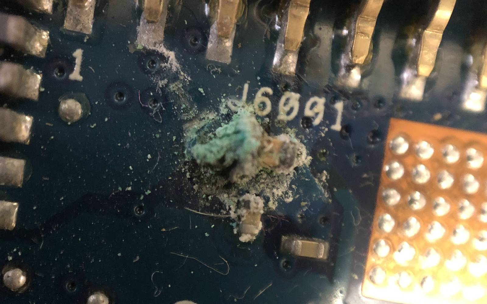
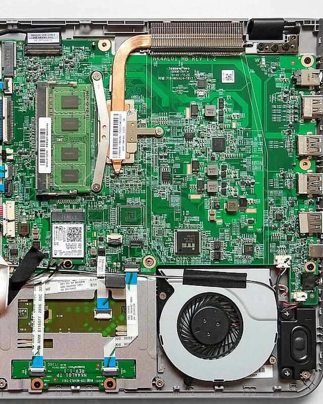
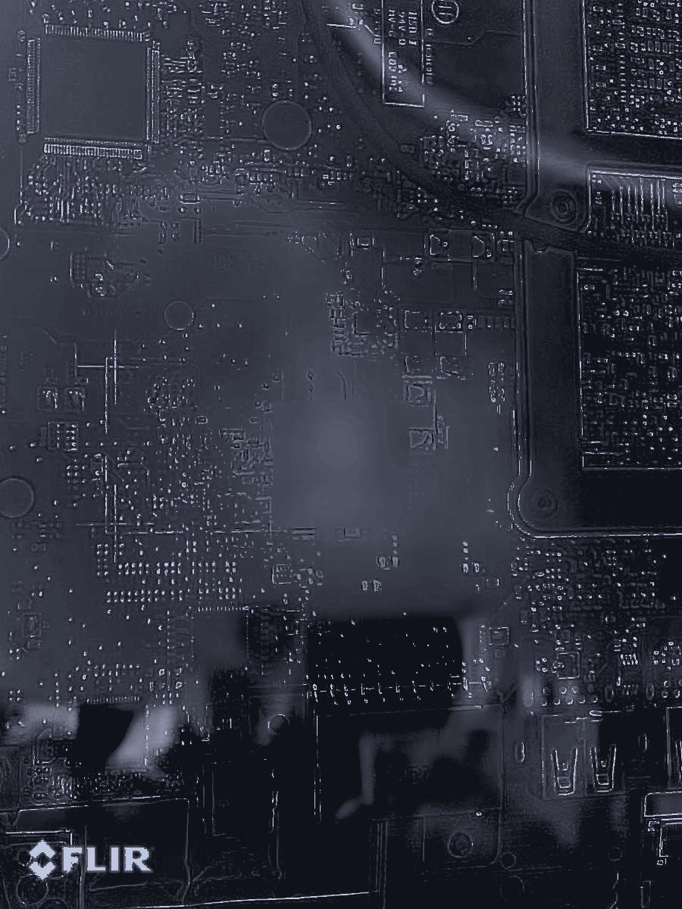
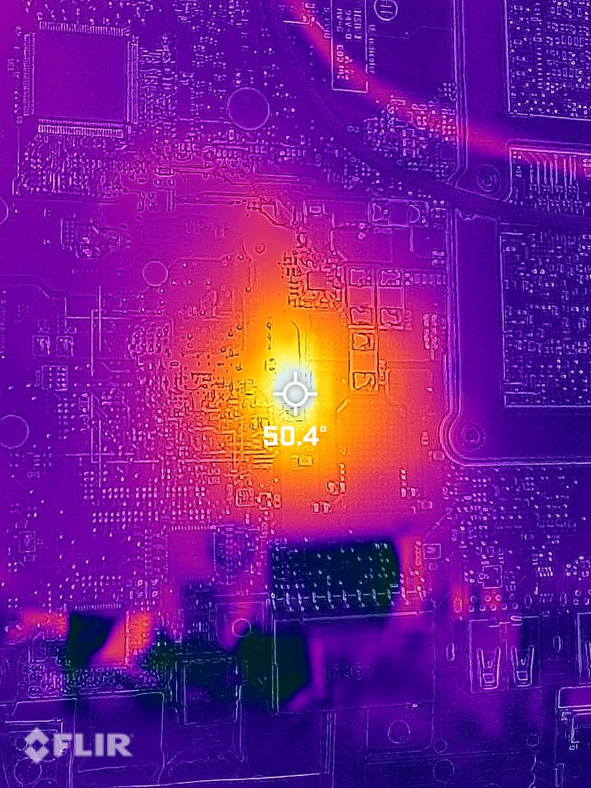
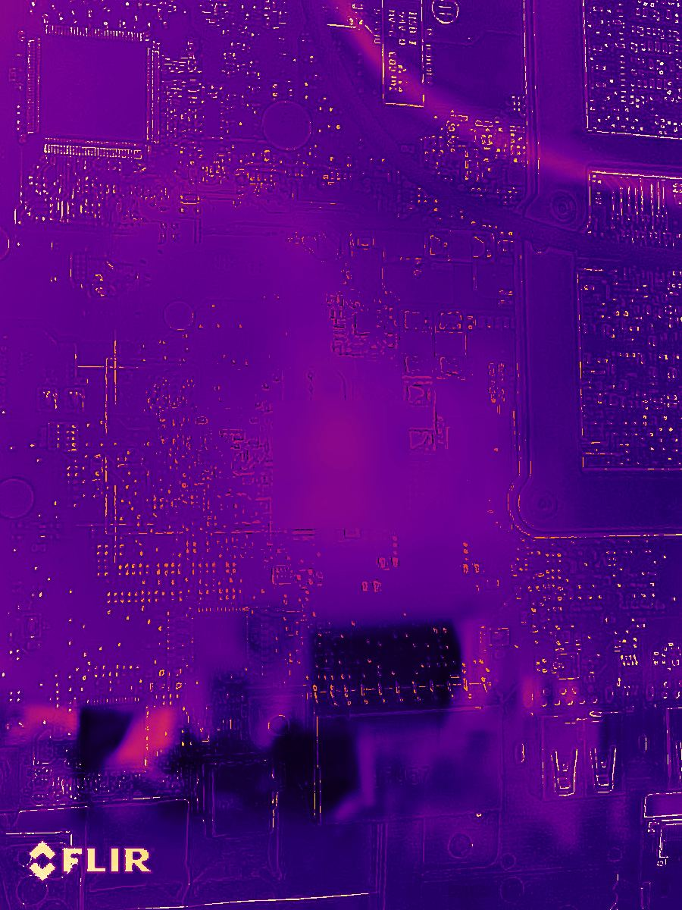
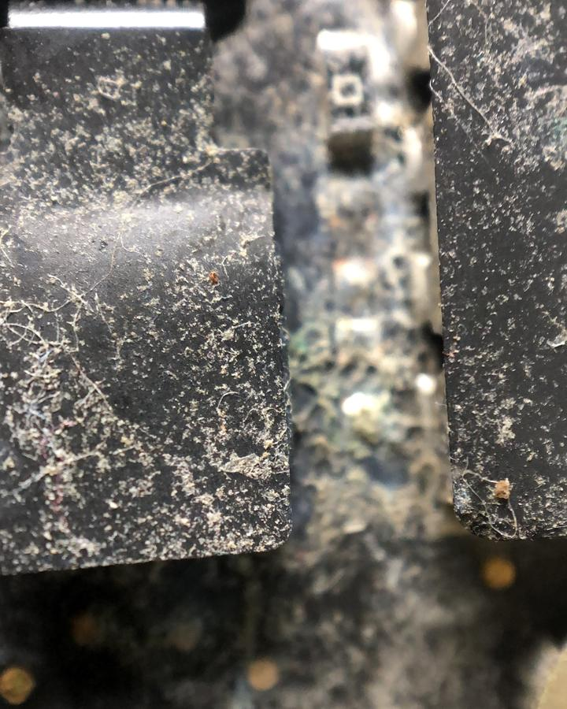

רוב החלקים במלאיMost parts in stock
צ'יפים, מסגרות וחלקים למחשבים ניידים.Chips, frames and laptop parts.
קונספט לדוגמה שנבנה עבור ספקטור אלקטרוניקה ומחשבים · זה אינו האתר הרשמי של העסקA sample concept built for Spektor Electronics & Computers · This is not the business’s official website

ספקטור אלקטרוניקה ומחשבים: מעבדה לתיקון לוחות אלקטרוניים ומחשבים ניידים, וחנות חלקים, ברוממה החדשה בחיפה.Spektor Electronics & Computers: a repair lab for circuit boards and laptops, and a parts shop, in Romema, Haifa.
מתמקדים ברכיב עצמו, כדי לאבחן ולפתור את התקלה.The focus is on the part itself, to diagnose and solve the fault.
רכיבים על הלוח, מסומנים לפני העבודה.Parts on the board, marked before the work.
נוזל שנשפך משאיר משקע על הרכיבים.Spilled liquid leaves a crust on the parts.
קצר מתחמם, והמצלמה התרמית מראה איפה.A short heats up, and the thermal camera shows where.
קבל פגוע, בתמונה מהמעבדה.A damaged capacitor, in a photo from the lab.

אפשר להחליף את כל החלקים במחשב הנייד.Every part of a laptop can be replaced.



הלוח פתוח על השולחן, כל רכיב במקומו.The board lies open on the bench, every part in place.
במצלמה התרמית: נקודה חמה אחת, 50.4 מעלות.On the thermal camera: one hot spot, 50.4 degrees.
עבודה ברמת הרכיב, על הלוח עצמו.Component-level work, on the board itself.
החום מתפזר, והצבע חוזר לסגול.The heat spreads out and the colour fades back to violet.
צילום תרמי מהמעבדה (FLIR), מתוך תמונות העסק בגוגל · שלב הקירור הוא המחשהThermal photo from the lab (FLIR), from the business’s Google photos · the cooling stage is an illustration
צ'יפים, מחשבים נייחים וניידים, ציוד היקפי, מסגרות וחלקים.Chips, desktops and laptops, peripherals, frames and parts.
צ'יפים, מסגרות וחלקים למחשבים ניידים.Chips, frames and laptop parts.
4laptop.co.il/products
אני כל כך שמח למצוא טכנאי נהדר שממש מתקן חלקים במחשב, החזיר לי את המחשב לעבודה במהירות, במחיר הגון. המעבדה הטובה ביותר שאני מכיר
I’m so glad to have found a great technician who actually repairs the parts in a computer. He got my computer working again quickly, at a fair price. The best lab I know.
ביקרתי בעקבות בעיה בטעינה של לפטופ. גנאדי היה אדיב, בדק ומצא שהבעיה הייתה הכבל של המטען, והחליף אותו ב-20 שקלים (במקום לנסות למכור לי מטען חדש בהרבה יותר כסף). שירות מצוין ואמין
I came in with a laptop charging problem. Gennady was kind, checked it and found the problem was the charger’s cable, and replaced it for 20 shekels (instead of trying to sell me a new charger for much more). Excellent, reliable service.
אמינות, מחיר, הוגנות. גנדי לא גבה עלות בדיקה, תיקן במהרה וגבה מחיר שפוי עבור קצר בלוח אם למחשב נייד. ממליץ
Reliability, price, fairness. Gennady didn’t charge for the diagnosis, fixed it quickly and charged a sane price for a short on a laptop motherboard. Recommended.
היה לי מקרה של חוסר מזל עם מחשב נייד חדש לגמרי שקצה של כבל שחיברתי אליו השתחרר ונשבר ונתקע חזק בתוך שקע הכניסה הרלוונטי. לאחר שבחנות שממנה קניתי לא הצליחו להוציא, הפנו אותי למעבדה הזו ושם אמנם לא בקלות אבל הצליחו… התרשמתי שמקצועיים והגונים
I had some bad luck with a brand-new laptop: the tip of a cable I’d plugged in came loose, broke and got stuck hard inside the port. After the shop I bought it from couldn’t get it out, they sent me to this lab, and there, not easily, they managed… My impression: professional and honest.
גרגורי היה מקצועי, סבלני ואדיב. הסביר הכל בצורה ברורה, תיקן את הבעיה במחשב הנייד שלי במהירות ובאמינות… יחס אישי יוצא דופן. ממליץ בחום!
Gregory was professional, patient and kind. He explained everything clearly and fixed the problem with my laptop quickly and reliably… Exceptionally personal care. Warmly recommended!

בדיקה לא כרוכה בתשלום.A diagnosis is free of charge.
כן, אפשר לתקן. אפשר להחליף את כל החלקים במחשב הנייד.Yes, it can be fixed. Every part of a laptop can be replaced.
רוב החלקים נמצאים במלאי, ולכן תיקון אורך בדרך כלל כיומיים עד ארבעה ימים.Most parts are in stock, so a repair usually takes about two to four days.
צ'יפים, מחשבים נייחים וניידים, ציוד היקפי, מסגרות וחלקים, וגם חנות מקוונת באתר 4laptop.co.il.Chips, desktops and laptops, peripherals, frames and parts, plus an online shop at 4laptop.co.il.